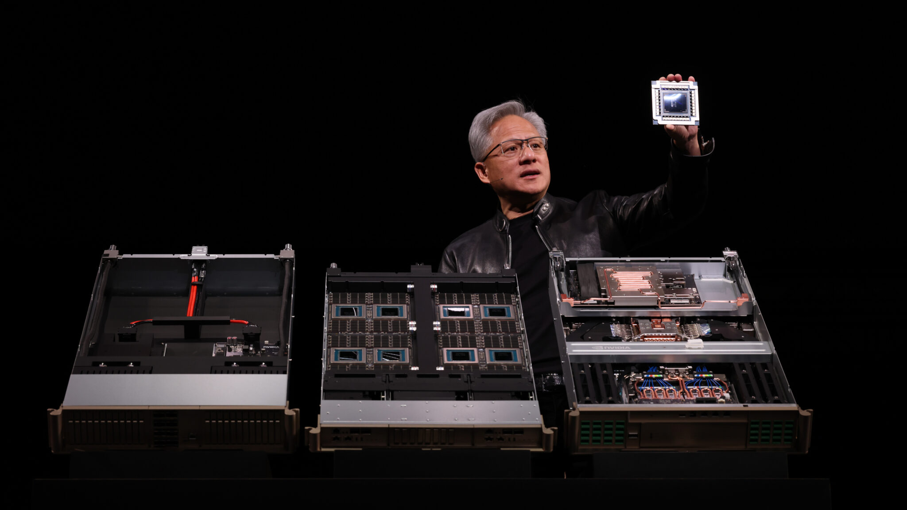
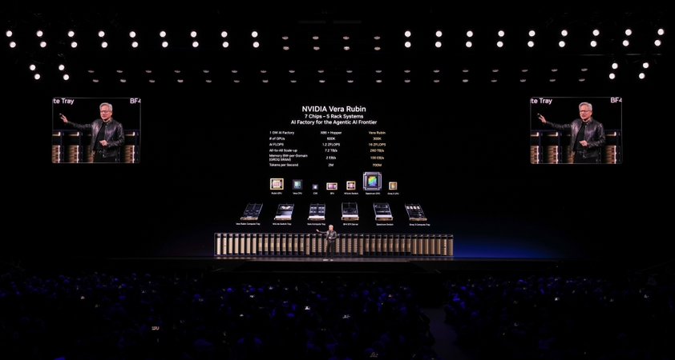
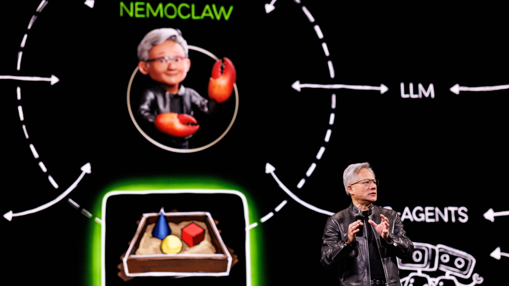
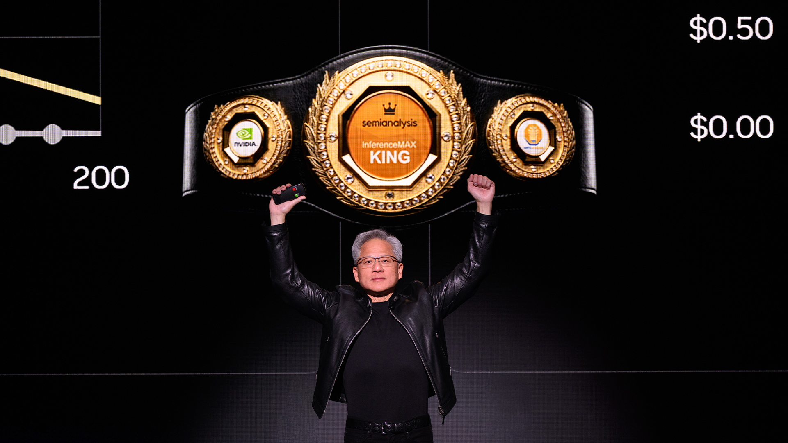
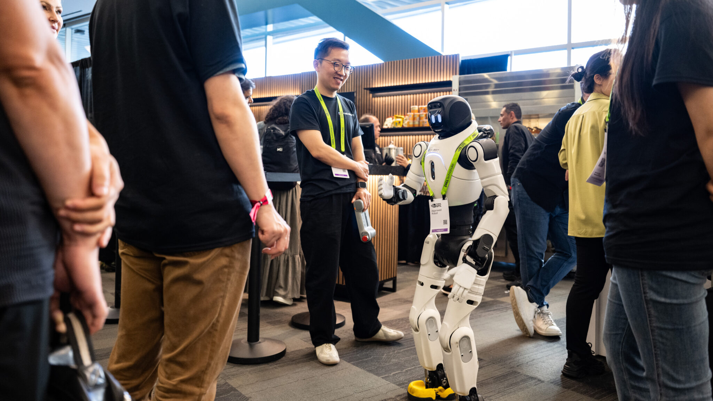
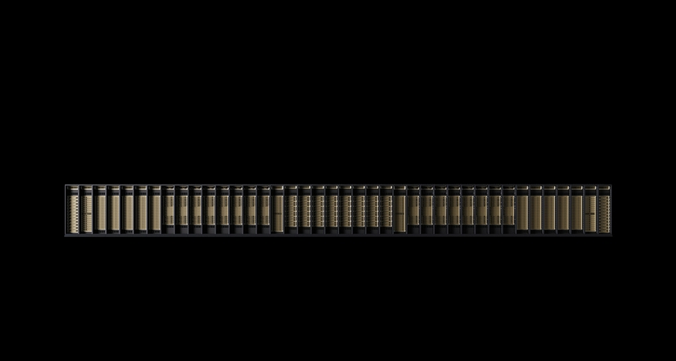

NVIDIA가 GTC 2026에서 차세대 Vera Rubin 플랫폼을 공개했습니다. 1GW 데이터센터 기준 토큰 생성 속도를 2년 내 200만에서 7억으로, 350배 끌어올리겠다는 로드맵입니다.
3D 그래픽과 생성형 AI를 결합한 DLSS 5, 구조화 데이터 가속 라이브러리 KUDF/KVS, 오픈소스 에이전트 프레임워크 Open Claw을 동시에 발표했습니다.
젠슨 황은 "데이터센터는 토큰 공장이고, 토큰당 와트가 곧 매출"이라고 선언했습니다. 컴퓨팅의 단위가 FLOPS에서 토큰으로 바뀌는 전환점입니다.
NVIDIA는 더 이상 GPU 회사가 아닙니다. 토큰 공장의 설계자입니다.
당신의 회사는 아직 GPU를 "서버에 꽂는 부품"으로 보고 있습니까?
젠슨 황이 2시간 19분 동안 무대에 섰습니다. GTC 2026 키노트의 핵심 메시지는 하나입니다. "데이터센터는 토큰을 만드는 공장이고, 토큰당 와트(tokens per watt)가 그 공장의 매출을 결정한다." 이 한 문장이 NVIDIA의 하드웨어, 소프트웨어, 생태계 전략을 모두 관통합니다. GTC 참석자 중 가장 많은 비율은 금융 서비스 업계였습니다. 이 키노트가 기술 발표가 아닌 산업 전략 발표인 이유입니다.
AI 산업의 전환이 3단계로 진행됐습니다. 2022년 말 ChatGPT가 생성형 AI 시대를 열었고, 2024년 O1이 추론(reasoning) AI로 신뢰성을 확보했습니다. 2025년 Claude Code가 에이전트 AI 시대를 시작했습니다. 젠슨 황의 표현대로라면 "컴퓨팅이 검색 기반에서 생성 기반으로" 전환된 것입니다.
이 전환은 연산량을 수십 배 끌어올렸습니다. 추론 모델은 사고를 위해 출력 토큰을 대량 생성하고, 에이전트 모델은 파일을 읽고 코드를 컴파일하며 도구를 사용합니다. 토큰 수요가 구조적으로 늘어나는 국면에서, NVIDIA는 토큰 생산 인프라 전체를 재설계하고 나섰습니다.
첫째, 가속 컴퓨팅입니다. Vera Rubin은 Blackwell의 후속 플랫폼으로, 7개 칩과 5개 랙스케일 컴퓨터로 구성된 AI 슈퍼컴퓨터입니다. 100% 수냉 방식이고, 45도 온수로 냉각합니다. 기존에 2일 걸리던 설치가 2시간으로 줄었습니다. 6세대 NVLink 스케일업 스위칭으로 144개 GPU를 하나의 컴퓨터로 연결합니다.

핵심 수치 3가지입니다. NVFP4 정밀도로 정확도 손실 없이 성능과 에너지 효율을 대폭 끌어올렸습니다. Blackwell 대비 메가와트당 처리량 35배 향상입니다. 1GW 데이터센터 기준 토큰 생성 속도가 200만에서 7억으로, 2년 내 350배 증가합니다.

둘째, 소프트웨어 플랫폼입니다. NVIDIA는 구조화 데이터(데이터프레임)를 위한 KUDF, 비구조화 데이터(벡터 스토어)를 위한 KVS 두 가지 기초 라이브러리를 만들었습니다. IBM Watson X, Snowflake, Databricks, AWS EMR, Azure Fabric, Google BigQuery에 통합됩니다. 젠슨 황은 "구조화 데이터가 신뢰할 수 있는 AI의 기초"라고 강조했습니다.
셋째, 에이전트 플랫폼입니다. Open Claw은 공개 수주 만에 리눅스의 30년 기록을 넘어선 오픈소스 프로젝트입니다. NVIDIA는 이를 기반으로 Nemo Claw 레퍼런스 스택을 만들었습니다. 정책 엔진, 가드레일, 프라이버시 라우터를 포함해 기업이 안전하게 에이전트를 배포할 수 있는 구조입니다. 젠슨 황은 "HTML, 리눅스만큼 중요한 오픈 에이전트 프레임워크"라고 평가했습니다.

첫째, 컴퓨팅의 측정 단위가 FLOPS에서 토큰으로 바뀌고 있습니다. 젠슨 황은 "AI 팩토리의 매출은 토큰당 와트"라고 명시했습니다. 1GW 데이터센터는 물리적으로 2GW가 될 수 없습니다. 고정된 전력에서 더 많은 토큰을 뽑아내는 것이 곧 매출입니다. 이것은 반도체 업계가 트랜지스터 수에서 성능당 와트로 이동한 것과 같은 구조적 전환입니다.

둘째, "구조화 데이터 + 생성형 AI"가 반복되는 공식입니다. DLSS 5에서 3D 그래픽(구조화)과 생성형 AI(확률적)를 결합했고, 같은 논리를 엔터프라이즈 데이터에 적용합니다. 구조화 데이터로 제어하고, 생성형 AI로 품질을 높이는 구조입니다. 이 조합이 게임에서 시작해 의료, 금융, 제조로 확산됩니다.
셋째, AI 네이티브 기업에 1,500억 달러가 투입됐습니다. 벤처 투자 역사상 최대 규모입니다. OpenAI, Anthropic 외에도 수많은 AI 네이티브 기업이 각 산업 분야에서 성장하고 있습니다. 젠슨 황은 이들을 "다음 세대의 Google, Amazon, Meta"로 지칭했습니다. 지난해 NVIDIA의 전체 상류·하류 공급망이 동반 최고 실적을 기록했습니다.
넷째, 물리적 AI가 본격화됩니다. GTC 현장에 로봇 110대가 전시됐습니다. 디즈니의 올라프는 NVIDIA Jetson 컴퓨터를 탑재하고, Newton 물리 시뮬레이터와 Omniverse에서 학습해 물리 세계에 적응하는 모습을 실시간으로 보여줬습니다. 자율주행차 모델 Alpamo는 추론 기능을 갖춰 "차선을 변경하는 이유"를 설명할 수 있습니다. 로봇 산업(50조 달러)과 제조업이 물리적 AI의 첫 시장입니다.

다섯째, NVIDIA 오픈 모델이 6개 패밀리로 확장됐습니다. Nemotron(언어·추론), Cosmos(물리 세계 생성), GROOT(범용 로봇), Alpamo(자율주행), BioNemo(생물학·화학), Earth-2(날씨·기후). 300만 개에 달하는 오픈소스 AI 모델 생태계와 연결됩니다. 학습 데이터, 레시피, 프레임워크까지 함께 공개해 맞춤형 모델 구축을 지원합니다.
1GW 데이터센터에서 낭비되는 전력은 곧 매출 손실입니다. 젠슨 황은 "쓰지 않는 와트 하나하나가 손실된 매출"이라고 했습니다. NVIDIA는 전력 최적화만으로 2배의 효율 개선이 가능하다고 봅니다. 1GW 규모에서 2배 차이는 연간 수십억 달러 단위의 매출 격차를 만듭니다.

추론 비용이 AI 사업의 핵심 원가(COGS)입니다. SemiAnalysis의 역대 최대 규모 AI 추론 벤치마크에서, NVIDIA Blackwell이 토큰당 와트와 추론 속도 모두에서 선두를 기록했습니다. 추론이 빠를수록 더 큰 모델을 쓸 수 있고, 더 큰 모델은 더 높은 품질의 서비스를 가능하게 합니다. 추론 효율이 곧 서비스 경쟁력입니다.
AI 팩토리 건설 지연은 월 수십억 달러의 매출 기회 비용입니다. NVIDIA는 Omniverse 디지털 트윈 기반의 DXX 플랫폼을 공개해, 칩 공장부터 데이터센터까지 건설 전 과정을 시뮬레이션합니다. "매달의 지연이 수십억 달러의 매출 손실"이라는 것이 젠슨 황의 직접적인 표현입니다.
Snowflake, Databricks, AWS EMR, Azure Fabric, BigQuery 중 어떤 플랫폼을 쓰고 있는지 점검합니다. KUDF/KVS 통합 여부를 해당 클라우드 제공사에 문의합니다. (1시간)
콘솔에서 한 줄 명령으로 설치됩니다. AI 에이전트가 기존 업무를 어떻게 처리하는지 직접 확인합니다. (30분)
현재 AI API 비용이 R&D 비용으로 잡혀 있다면, 이를 매출 원가로 재분류하는 것을 재무팀과 논의합니다. 토큰이 제품의 원재료라면 COGS가 맞습니다. (재무팀 미팅 1시간)
자사 AI 서비스의 토큰당 비용, 토큰당 매출을 산출합니다. 이 지표가 없으면 AI 사업의 수익성을 판단할 근거가 없습니다. (2시간)
키노트는 NVIDIA의 마케팅 행사입니다. 발표된 수치(350배, 35배)는 NVIDIA 자체 벤치마크 기준입니다. 독립 검증이 완료될 때까지 의사결정의 유일한 근거로 삼기엔 이릅니다. SemiAnalysis의 추론 벤치마크가 외부 검증의 시작점이지만, 전체 스택에 대한 검증은 아직 부족합니다.
Vera Rubin은 출하 전입니다. 첫 랙이 Microsoft Azure에서 가동 중이라는 발표가 있었지만, 대규모 상업 출하는 2026년 하반기(Q3) 이후입니다. Blackwell의 NVLink 72도 초기 샘플링에서 난항을 겪었다는 점을 젠슨 황 본인이 인정했습니다.
Open Claw의 인기와 기술 성숙도는 별개입니다. "인류 역사상 가장 빠르게 성장한 오픈소스 프로젝트"라는 표현은 스타 수 기준입니다. 기업 프로덕션 환경에서의 안정성, 보안, 확장성은 별도로 검증해야 합니다. Nemo Claw의 가드레일과 정책 엔진이 어느 수준까지 커버하는지 확인이 필요합니다.
NVIDIA 종속(lock-in) 리스크가 커지고 있습니다. KUDF, KVS, NVLink, Dynamo, DXX까지, 데이터 처리부터 인프라 관리까지 NVIDIA 스택이 관통합니다. 단기적으로는 성능 이점이 크지만, 장기적으로 대체 경로를 확보하지 않으면 협상력을 잃습니다.
컴퓨팅의 화폐가 FLOPS에서 토큰으로 바뀌고 있습니다. NVIDIA는 그 화폐를 찍어내는 조폐국을 설계하고 있고, 당신의 회사는 그 화폐의 구매자이자 판매자가 될 준비를 해야 합니다.
- Huang, J. (2026, March 17). NVIDIA GTC 2026 Keynote. YouTube. https://www.youtube.com/watch?v=jIviHI7fqyc
- SemiAnalysis. (2026). AI Inference Benchmark: Tokens per Watt. semianalysis.com
- NVIDIA. (2026). Vera Rubin Architecture. nvidia.com
- NVIDIA. (2026). Open Claw / Nemo Claw. nvidia.com